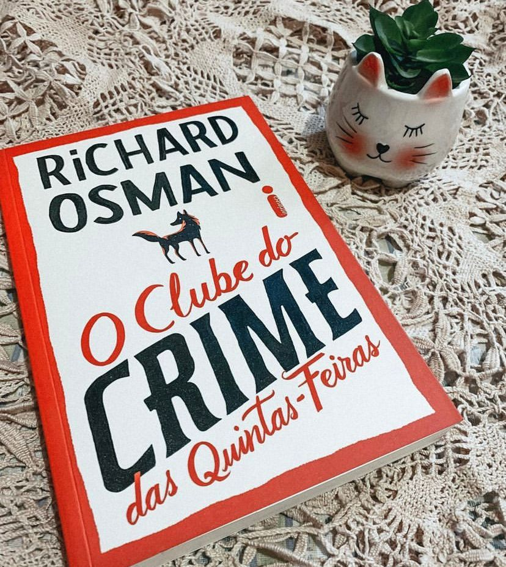

O Clube do crime das Quintas-feiras
(Richard Osman - Intrínseca)
⭐⭐⭐⭐
Hoje vamos falar de um livro maravilhoso recheado de mistério, crime e um clube de velhinhos fofos (nem sempre) dando uma de detetive. Em um retiro para aposentados Elizabeth, Ibrahim, Joyce e Ron se reúnem todas as quintas-feiras para debater sobre crimes sem solução, confiantes que vão conseguir decifrar o que a polícia não conseguiu.
Um belo dia, um empreiteiro local com projetos muito questionáveis aparece morto e nosso clube de velhinhos veem a chance de seguir um caso atual.
Richard Osman escolheu uma narrativa repleta de mistério e muito bom humor. O grupo de idosos se aproveita de toda a liberdade da idade para xeretar o trabalho da polícia. O livro é muito bem elaborado e uma ideia super original, os personagens são bem construídos e possuem personalidades bem definidas e diferentes entre si. Os detetives da Polícia Chris e Donna vão ter que aguentar toda a turma de velhinhos enquanto fazem sei trabalho!
Se você procura um thriller realista, cheio de mistério e uma pitada de humor com velhinhos maravilhosos, este livro é pra você!
O segundo livro da saga de “O clube do crime das quintas-feiras” já tá aí e se chama: O homem que morreu duas vezes”. Ansiosa pra ler.